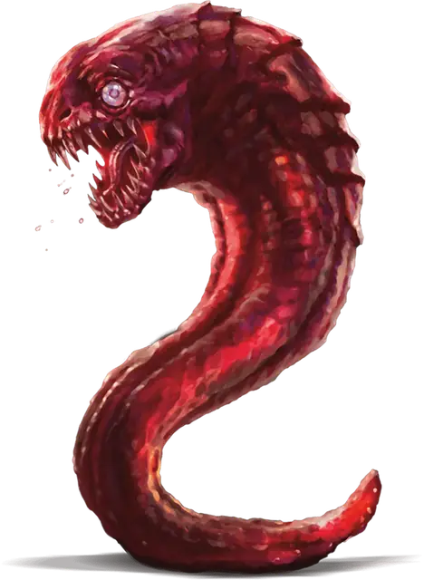

Слаад головастик
Slaad Tadpole
Крошечная Аберрация, Хаотичная Нейтральная

Класс Защиты 12 Инициатива +2 (12)
Хиты 7 (3к4)
Скорость 30 футов, Копания 10 футов
| мод | спас | ||
|---|---|---|---|
| СИЛ | 7 | −2 | −2 |
| ЛОВ | 15 | +2 | +2 |
| ТЕЛ | 10 | +0 | +0 |
| мод | спас | ||
|---|---|---|---|
| ИНТ | 3 | −4 | −4 |
| МДР | 5 | −3 | −3 |
| ХАР | 3 | −4 | −4 |
Сопротивление урону Звук, Кислота, Огонь, Холод, Электричество
Чувства Тёмное зрение 60 футов, пассивное Восприятие 7
Языки понимает Слаадский, но не говорит
Опасность 1/8 (25 опыта; БВ +2)
Особенности
Сопротивление магии. Слаад совершает с Преимуществом спасброски от заклинаний и прочих магических эффектов.
Действия
Укус. Бросок рукопашной атаки: +4, досягаемость 5 фт. Попадание: 5 (1к6 + 2) Колющего урона.
Бонус мастерства +2
Среда обитания Лимбо
Сокровища Любые
Слаады
Орды, рождённые хаосом Лимба
Непредсказуемые слаады пожирают и множатся среди Вечноизменчивого хаоса Лимба. Эти жабоподобные инопланарные создания воплощают собой безграничную изменчивость родного плана бытия. Хотя слаады не злы по своей сути, их порывы дики и зачастую разрушительны. Многих подстёгивает нужда размножаться. К несчастью, способы этого размножения далеки от естественных и обычно смертельны для других существ.
У слаадов нет чёткого общества; вместо этого сильные слаады господствуют над слабыми. Синие и красные слаады неистовствуют по просторам Лимба и выплёскиваются в другие миры по воле зелёных слаадов. Более могущественные слаады связаны с Нерестильным камнем — источником хаотической магии, из коего вышли первые слаады. Нерестильный камень сокрыт глубоко в недрах Лимба, и легенды возводят его происхождение к верховному владыке модронов Примусу или к губительным владыкам слаадов — таким как Ссендам, золотистый амёбовидный ужас, и Игорл, крылатый скелет. Эти и прочие владыки слаадов строят козни, замышляя рассеять слаадов по всей мультивселенной.
Камни подчинения слаадов
В голове слаада, рождённого от Нерестильного камня, заключён магический камень подчинения. Если существо завладевает этим камнем, слаад становится Очарован и повинуется носителю камня. Состояние Очарованный оканчивается, если носитель камня или его союзники причинят слааду вред либо если камень будет возвращён слааду. Слаад перестаёт быть Очарованным, если на него сотворено заклинание Высшее восстановление, которое уничтожает камень.
Завладеть камнем подчинения слаада можно с помощью заклинаний Желание или Заточение. Если слаад проваливает спасбросок против Заточения, заклинатель получает камень, а слаад не заточается. Если слаад Недееспособен, камень подчинения можно извлечь, потратив 1 минуту и преуспев в проверке Мудрости (Медицина) Сл 20; при провале слаад получает 22 (4к10) Колющего урона.
Головастики — это прожорливые новорождённые слаады. Они вылупляются из яиц, внедрённых в живых носителей красными слаадами, но также в огромных количествах появляются в самом Лимбе и других хаотичных планах. В большинстве случаев слаад головастик превращается в синего слаада — или в зелёного, если его носитель был способен сотворять заклинания 3-го уровня и выше, — спустя 2к12 часов после вылупления.